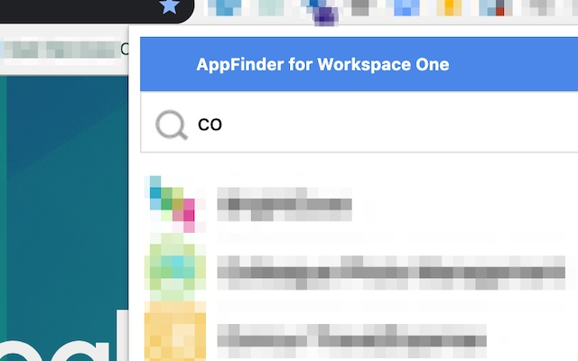

Workspace ONE Finder
Find things you need in VMware Workspace ONE
About
This extension lets you sign into applications to which you are entitled on Workspace ONE, right from your browser!

Set a keyboard shortcut and never use your mouse again.
Installation
| as an Add-on for Firefox | |
 |
as an Extension for Chrome |
| as an Add-on for Edge |
Code
 ws1-finder/ws1-finder
ws1-finder/ws1-finder
Notes
- Currently only shows applications that can be launched via your browser (i.e. not Horizon applications)
- The extension is installed with a suggested shortcut of Ctrl/Cmd+Shift+K. (shortcuts are generally managed by your browser)